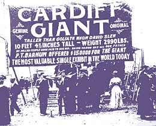

|
The Cardiff Giant Discovered by William C. Newell, a farmer from Cardiff, in Upstate New York, on October 16, 1869. It was claimed this ten and a half foot tall statue was a fossilized man who had been buried for many years, and the giant quickly became a tourist attraction. But nominal investigation by experts declared it a statue, and a recently-created one at that. It eventually came to light that the Cardiff Giant had been created by George Hull, a New York tobacconist who hired a stonemason to carve the statue and treat it to appear aged, then transported it to Cardiff and buried it.Not willing to let something silly like the facts get in the way of a good story, the giant continued to attract crowds and was moved to New York City to put on display. P.T. Barnum offered to purchase the giant and was turned down; Barnum then created a copy of the giant and displayed that. The giant is now on display at the Farmer's Museum in Cooperstown, NY. |